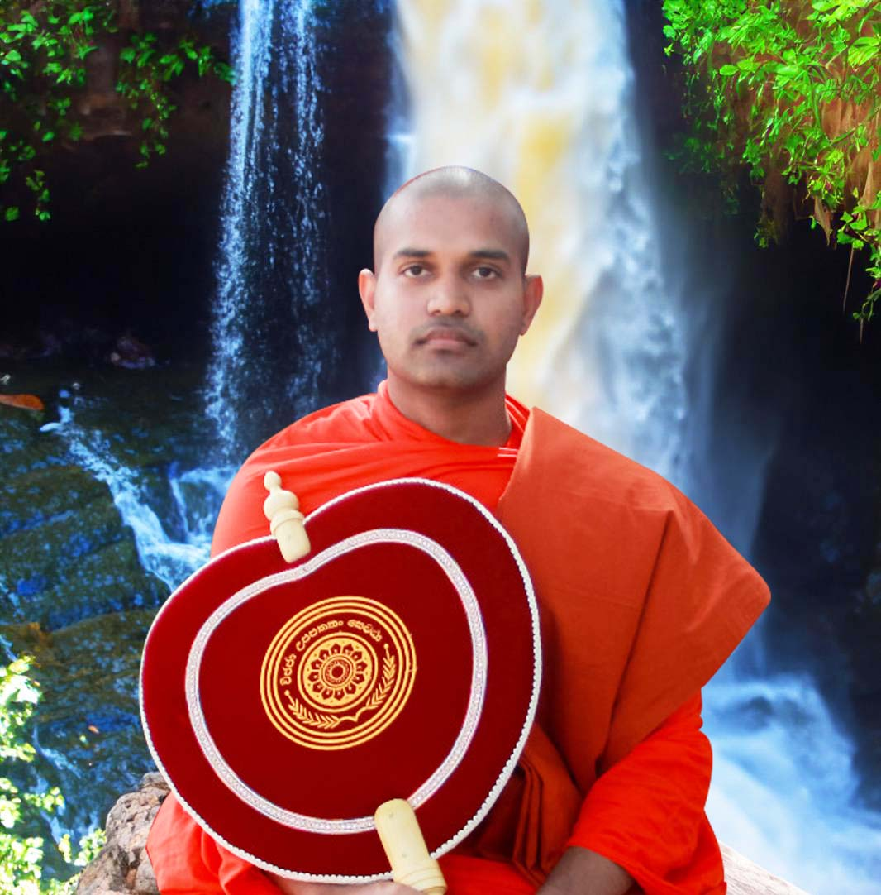
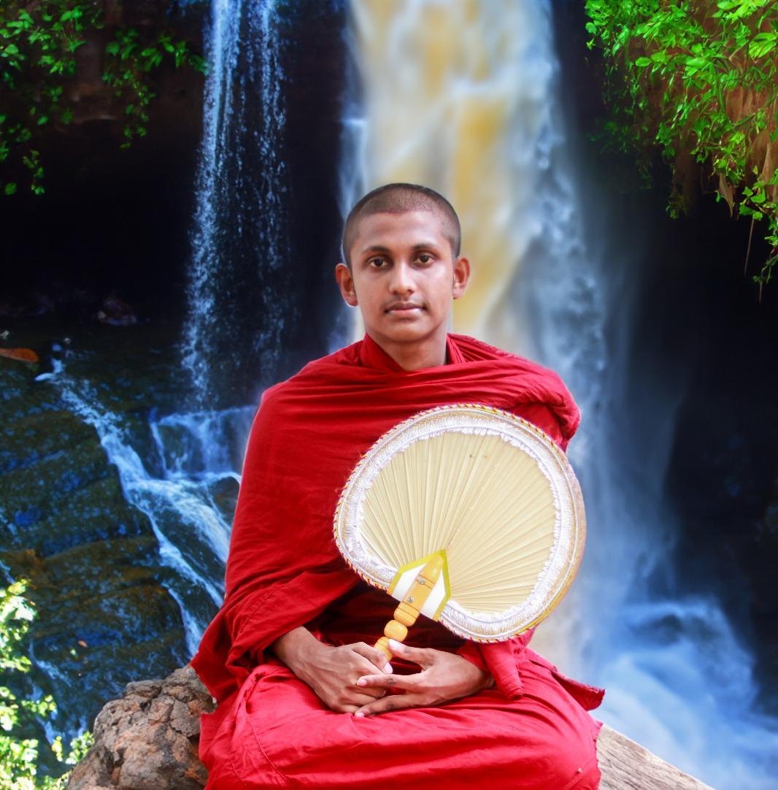

Principal: Ven. Pathakada Chandawimala
Head Teacher, Administrative Secretary: Mrs. Dilshani Nishara
Secretary: Mrs. D. Dilshani Nishara
Head Prefect: Vihanga Kaveen
Media and Religion Sector: Mr. T. A. Ganesha Dulanga
Acting Deputy Head Master: Ven. Heenatigala Nagitha Wimala
Vice Headmaster, Secretary, and Deputy Administrative Secretary: Miss. K. Osuri Sadunika
Assistant Head Teacher: Mrs. S. R. Manojika Soysa
Prefect Guild: Mrs. Upecksha Sanjeewani
Exams and Senior Sections: Mr. M. G. Lilaksha Theekshana
Primary Section: Mrs. R. A. Priyadarshani Ranasinghe
Competent Section: Mr. Chanula Maduwantha
Treasurer: Miss S. H. Tashiya Nipunya
Vice Secretary of the Development Committee: Miss S. H. Yeshini Yashoda